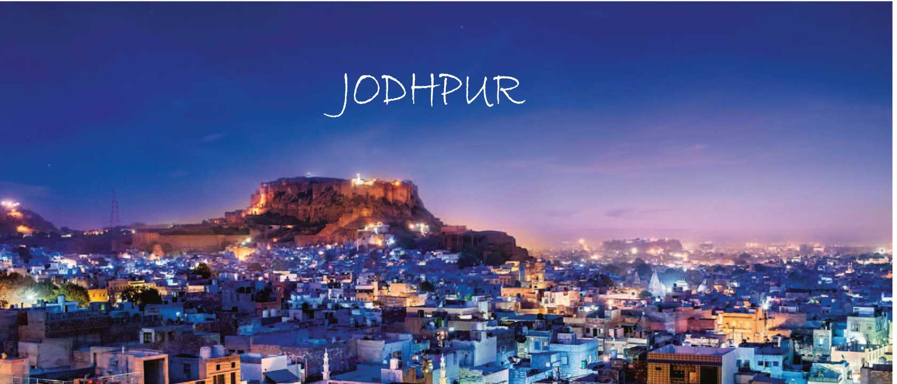

JODHPUR
A DELIGHTFUL BLEND OF THE MODERN AND THE TRADITIONAL
Jodhpur, the second largest city in Rajasthan is popularly known as the Blue City. The name is clearly befitting as most of the architecture – forts, palaces, temples, havelis and even houses are built in vivid shades of blue. The strapping forts that tower this magnificent city sum up to a spectacle you would not want to miss. The mammoth, imposing fortress of Mehrangarh has a landscape dominating a rocky ridge with the eight gates leading out of the fortress. The new city is located outside the structure. Jodhpur is also known for the rare breed of horses known as Marwari or Malani, which are only found here.
Jodhpur marks its origin back to the year of 1459 AD. The history of this prosperous city revolves around the Rathore clan. Rao Jodha, the chief of Rathore Clan is credited with the origin of Jodhpur in India. The city is known to be built in place of the ancient capital, Mandore of the state of Manwar. Hence, the people of Jodhpur and surrounding areas are commonly known as Marwaris. Also, it is believed that the relics of Mandore can still be witnessed in the Mandore Gardens.

MEHRANGARH FORT
Rising perpendicular and impregnable from a hill which is 125 metres above Jodhpur’s skyline is the Mehrangarh Fort. This historic fort is one of the most famous in India and is packed with history and legends. Mehrangarh Fort still bears the imprints of cannonball attacks courtesy the armies of Jaipur on its second gate.

MOTI MAHAL
Moti Mahal, as the name suggests, is the Pearl Hall where the royal families held their audience. The hall is known to have glass windows and five nooks that enabled the queens to listen to the proceedings taking place in the Sringar Chowki, The Royal Throne of Jodhpur.

PHOOL MAHAL
Going by the name, the Phool Mahal or Flower Hall is the most exorbitant of all the halls in the palace. This beautiful chamber is said to be the pleasure dome for the Maharajas. The gold used for constructing the Mahal came from Ahmedabad, Gujarat.

UMAID BHAWAN PALACE
Umaid Bhawan Palace was built by Maharaja Umaid Singh in 1929 to counter a famine which had hit the state at the time. It was also known as the Chittar Palace while being constructed thanks to the use of stones drawn from the Chittar hill.